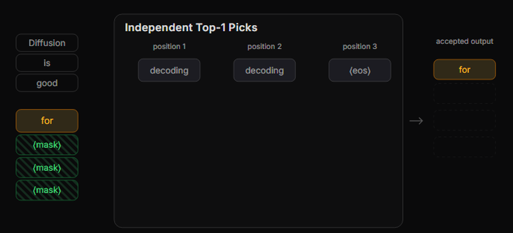
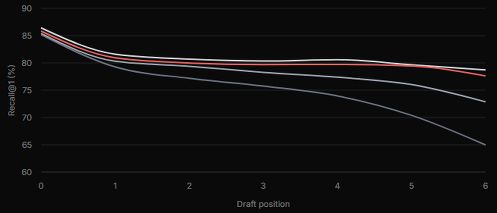
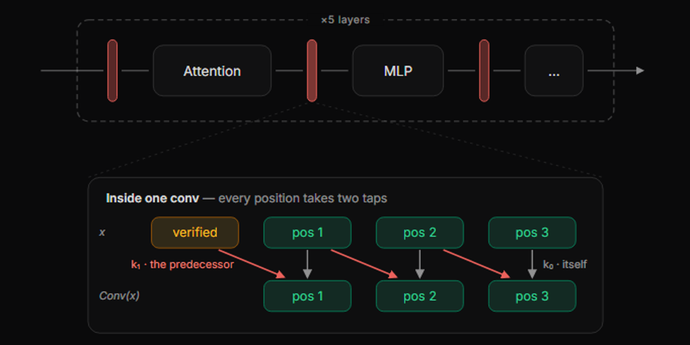
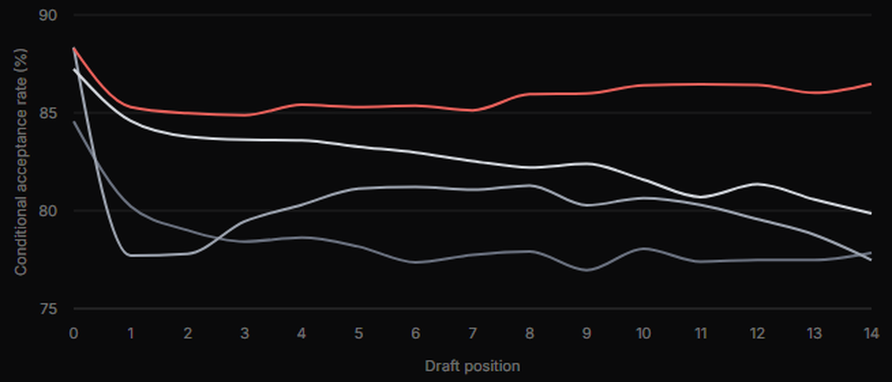

推理是agent时代的瓶颈。agent阅读、规划、调用工具，常常持续数小时或数天。它们消耗token的速率是聊天从未接近的。每一个token都需要对模型做一次完整前向。在Inco AI，我们正在构建扩展到明天token经济学的推理栈。这篇文章是个预览。
我们的团队一月份发布了DFlash；它现在运行在SGLang、vLLM、TensorRT-LLM和llama.cpp中。NVIDIA用它在Blackwell GPU上测到最高15× 吞吐；Google报告TPU上每秒token多3×；CoreWeave的生产Kimi K2.7 Code端点默认运行DFlash。生态正在它之上构建：NVIDIA、Red Hat、Modal都发布了DFlash drafters；Meta、Poolside、Xiaomi、NVIDIA用自己的模型发布了官方drafters。在Hugging Face上，DFlash模型下载超过350万次（截至2026年8月）。
投机解码是现代推理栈的核心。小draft模型猜一块token，目标模型一次前向验证整块。好猜把一次前向变成几个token；坏猜只是被扔掉。多年以来，draft本身保持自回归：一次一个token。DFlash让它也变一次前向：整块、每个位置、并行预测。
DFlash 2把并行起草再推进一步：每次验证多出20% 以上输出，代价约1% 的循环延迟，且输出可证明不变。跨基准增益16-25%。随着今天发布的Qwen3.8-27B drafter，SGLang在batch size 1下以自回归解码2.7-3.4× 的吞吐服务。独立预测每个位置在两方面留了余量：选对token、把准确率保持到块尾。DFlash 2在不放弃一次前向设计的前提下恢复两者。
DFlash 2已运行在主流入射引擎中：
SGLang：安装 + 启动：
vLLM：安装 + 启动：
llama.cpp：编译 + 启动：
下载并安装[带DFlash 2支持的预构建oMLX](https://github.com/z-lab/omlx-fork/releases/download/0.6.2-dflash2/oMLX-0.6.2-zlab-dflash2-arm64-signed.dmg)。
在oMLX中运行Qwen3.8-27B + DFlash 2：① 打开Model Downloader下载mlx-community/Qwen3.8-27B-4bit和incoai/Qwen3.8-27B-DFlash2；② 打开Model Manager编辑Qwen3.8-27B-4bit，配置DFlash：启用、Draft model选incoai/Qwen3.8-27B-DFlash2、Draft quantization启用、Runtime block size=5、Verify mode=dflash；③ 保存并加载目标模型。
pip install -U "sglang[all] @ git+https://github.com/sgl-project/sglang.git@refs/pull/35371/head#subdirectory=python"
python -m sglang.launch_server \
--model-path Qwen/Qwen3.8-27B \
--speculative-algorithm DFLASH \
--speculative-draft-model-path incoai/Qwen3.8-27B-DFlash2 \
--speculative-num-draft-tokens 8pip install -U "vllm @ git+https://github.com/vllm-project/vllm.git@refs/pull/52816/head"
vllm serve Qwen/Qwen3.8-27B \
--speculative-config '{"method": "dflash", "model": "incoai/Qwen3.8-27B-DFlash2", "num_speculative_tokens": 7}'git clone https://github.com/ggml-org/llama.cpp.git
cd llama.cpp
git fetch origin pull/27342/head:pr-27342
git switch pr-27342
# NVIDIA CUDA
cmake -B build -DCMAKE_BUILD_TYPE=Release -DGGML_CUDA=ON
cmake --build build -j
# Apple Silicon
cmake -B build -DCMAKE_BUILD_TYPE=Release -DGGML_METAL=ON
cmake --build build -j
./build/bin/llama-server \
-hf ggml-org/Qwen3.8-27B-GGUF:Q4_K_M \
-hfd incoai/Qwen3.8-27B-DFlash2-GGUF:Q4_K_M \
--spec-type draft-dflash \
--spec-draft-n-max 7DFlash独立并行预测每个位置。每个选择单独看都合理。但没什么让它们组合在一起，不连贯的块在验证时被截短。最近的方法如Domino和DSpark用顺序Markov头改写每个位置的全词表分布来买连贯性。但这种昂贵的自回归修正真的必要吗？

不需要。证据已经在DFlash自己的候选列表里。拿第一个位置：DFlash的首选85.4% 正确，但正确token在它top16候选里的概率是99.5%。即使首选错了，正确token通常也在列表上。
一个总是从top16选对的oracle会把接受长度从4.27提到6.79。那个差距是纯粹的选择余量。我们只需要通过候选选出正确的路径。
表1：每个draft位置的Recall@1（首选多常正确）和Recall@16（正确token在top16里的概率），以每个更早位置正确为条件。五层Qwen3-4B DFlash在GSM8K上。接受长度包含验证器的下一个token。
| Metric | 0 | 1 | 2 | 3 | 4 | 5 | 6 | 接受长度 |
|---|---|---|---|---|---|---|---|---|
| Recall@1 | 85.4% | 80.3% | 79.4% | 78.3% | 77.5% | 75.9% | 72.9% | 4.27 |
| Recall@16 | 99.5% | 97.3% | 94.8% | 92.6% | 90.8% | 89.4% | 87.8% | 6.79 |
连贯性大多是局部的：候选的契合主要取决于它前一个token，所以给相邻对打分应该就够了。DFlash 2在每位置保留top16候选，给每个相邻对打分：对前驱a和当前候选b，S_t(a,b) = U_t(b) + ⟨A(a)⊙H(h_t), B(b)⟩。
分数有两部分。第一部分U_t(b) 是DFlash自己的logit：drafter单独有多喜欢b。第二部分问b有多好地跟随a：A和B给每个token一个紧凑的256维嵌入，两个嵌入在上下文门H(h_t) 下匹配，它决定匹配的哪些部分算数。本质上，这是对相邻候选的低秩双线性attention。
打分保持完全并行。每个位置的每个相邻对一次打完全部，没有额外backbone或LM-head前向。唯一顺序工作是最后在预计算分数上的行走：从最后一个已验证token开始，贪婪跟随每步最佳后继，采样从同一分数抽取，拒绝采样恢复精确的目标分布。
表2：仅路径选择（无卷积）的接受长度，五层Qwen3-4B在GSM8K上。开销相对纯DFlash：加到drafter的参数、加到的draft-verify循环延迟。
选择器把DFlash提升0.34 token（T=0）和0.47（T=1）。它在两种设置下都击败DSpark修正，参数少约40×、延迟开销低16×。选择比预测便宜。而且还有空间：oracle达到6.79。成对打分是我们能想到的最简单的选择器，我们相信还有很多可探索。
| 方法 | 参数 | 延迟 | T=0 | T=1 |
|---|---|---|---|---|
| DFlash | ： | ： | 4.27 | 3.78 |
| + DSpark修正 | +77.8M | +9.6% | 4.49 | 4.08 |
| + 路径选择（我们） | +2.0M | +0.6% | 4.61 | 4.25 |
我们还注意到上面两个recall行都向块尾下降。甚至oracle也衰减：完美选择下准确率仍从首位置99.5% 掉到最后87.8%。没有选择器能修这个，因为候选本身在耗尽。我们称之为后缀衰减，它是backbone问题。

一个嫌疑是容量：五层backbone可能太小、无法在块内保持依赖。如果对，深度应该在更后位置帮助最大。确实如此！3、5、15层DFlash模型在首位置几乎相同，向块尾散开。但深度不分青红皂白：十个额外attention块到处加容量，甚至那些没多少可得的早期位置，抹掉了让DFlash有吸引力的效率。
我们想要定向修复，而DFlash的attention显示了在哪。它有两份工作：读块前上下文、建模块内依赖。但它在第二个上花得越来越少：块的attention份额从第1层的30% 掉到第5层的8%，剩下的集中在缩小的几个头里。所以我们拆分工：专用模块接管块内工作，attention继续读上下文。
图2数据：各drafter的Recall@1（T=0，以更早位置正确为条件）。
| Draft position | 0 | 1 | 2 | 3 | 4 | 5 | 6 |
|---|---|---|---|---|---|---|---|
| DFlash 3L | 85.21% | 79.26% | 77.18% | 75.75% | 73.96% | 70.4% | 64.97% |
| DFlash 5L | 85.39% | 80.31% | 79.39% | 78.27% | 77.39% | 76.03% | 72.86% |
| DFlash 15L（3×参数） | 86.42% | 81.61% | 80.68% | 80.34% | 80.59% | 79.66% | 78.73% |
| DFlash 5L+conv（+3%参数） | 85.83% | 80.94% | 79.98% | 79.68% | 79.73% | 79.43% | 77.61% |
图3：五层Qwen3-4B DFlash中按头的块内attention。亮格标记把更多attention花在draft块上的头；在后层块内质量收缩并集中在少数几个头里。
数据表（每层×32头within-block attention %）：
| Attention head | 1 | 2 | 3 | 4 | 5 | 6 | 7 | 8 | 9 | 10 | 11 | 12 | 13 | 14 | 15 | 16 | 17 | 18 | 19 | 20 | 21 | 22 | 23 | 24 | 25 | 26 | 27 | 28 | 29 | 30 | 31 | 32 |
|---|---|---|---|---|---|---|---|---|---|---|---|---|---|---|---|---|---|---|---|---|---|---|---|---|---|---|---|---|---|---|---|---|
| Layer 1 | 17.6% | 2.9% | 41.4% | 50.8% | 29.2% | 50.5% | 44.6% | 5.9% | 44.5% | 11.3% | 17.9% | 36.7% | 0.0% | 14.2% | 0.1% | 0.0% | 13.3% | 1.5% | 18.7% | 7.6% | 45.0% | 33.5% | 53.1% | 42.2% | 64.3% | 60.1% | 32.8% | 47.7% | 49.6% | 57.0% | 26.0% | 52.9% |
| Layer 2 | 20.8% | 26.4% | 39.6% | 18.9% | 8.9% | 22.6% | 13.1% | 32.1% | 22.9% | 25.1% | 24.2% | 28.6% | 36.6% | 26.1% | 41.0% | 36.1% | 17.8% | 25.5% | 25.7% | 25.6% | 4.3% | 21.8% | 23.3% | 22.1% | 15.6% | 70.9% | 58.0% | 2.7% | 28.3% | 38.5% | 20.3% | 33.5% |
| Layer 3 | 1.8% | 11.0% | 9.5% | 5.2% | 34.8% | 8.4% | 12.1% | 14.4% | 11.8% | 22.0% | 8.8% | 3.7% | 4.9% | 10.6% | 17.7% | 52.0% | 4.4% | 19.0% | 13.1% | 9.9% | 61.3% | 76.1% | 47.0% | 60.3% | 1.4% | 8.9% | 6.0% | 64.1% | 9.4% | 3.3% | 8.3% | 8.3% |
| Layer 4 | 0.4% | 37.7% | 28.3% | 85.5% | 0.3% | 1.5% | 0.4% | 0.5% | 1.2% | 12.5% | 36.6% | 1.2% | 1.7% | 0.6% | 2.5% | 1.3% | 7.2% | 3.1% | 48.9% | 3.8% | 3.2% | 1.0% | 23.8% | 1.0% | 0.1% | 0.1% | 0.2% | 0.3% | 2.8% | 6.7% | 12.9% | 12.3% |
| Layer 5 | 1.5% | 0.2% | 0.6% | 0.1% | 60.2% | 76.0% | 0.9% | 0.0% | 0.2% | 12.3% | 32.3% | 0.1% | 15.8% | 0.5% | 0.5% | 0.5% | 0.2% | 0.1% | 0.6% | 0.2% | 0.3% | 28.1% | 0.2% | 1.3% | 0.1% | 0.1% | 0.2% | 29.9% | 0.1% | 0.1% | 0.1% | 1.2% |
块内工作本来就是短程的：一块只跨4到16个token，最紧的依赖在邻居之间。自然的算子是个短卷积：两个tap，一个在当前位、一个回看一位，权重随内容适应。遵循Canon Layers、Dynamic Short Convolutions和Convolution for Large Language Models，我们在每个attention和feed-forward子层前后插入这个两tap动态深度卷积：

Conv_k(x)_t = k_{t,0}⊙x_t + k_{t,1}⊙x_{t-1}。
每个系数组合一个学习的基础内核与一个从当前隐藏状态算出的微小修正；每16个通道共享一个修正。第一个位置读最后一个已验证token的表示，每个更后位置读其前驱的。信息跨块流动，而所有位置仍并行计算。
卷积是块局部且无状态的，所以它无痛落入DFlash，不改变attention、LM头或验证。
只用16.5M新增参数（3%），五层DFlash + 卷积[接近15层DFlash]，大幅减少后缀衰减。卷积给draft-verify循环延迟加0.7%；十个Transformer层加15.2%。第4、5层的平均块内attention也从9.4% 掉到0.5%，一致于卷积吸收局部工作、attention回到读上下文。一个回看一位的内核恢复十个额外层买的大部分：后缀衰减大多是局部问题。
到目前为止，选择器和卷积是分开测的；下面的完整对比把它们放一起。我们自己按匹配设置训练DFlash和DSpark drafters，而MTP随模型发布。
表3：Qwen3.5-4B每请求平均接受长度。采样：thinking启用、温度1.0、top-p 0.95、top-k 20、presence penalty 1.5，带无损拒绝采样。
DFlash 2在每个基准领先。跨它们平均，比DFlash多1.05 token（21%）、比DSpark多0.48。升级保持便宜：选择器和卷积合计只给五层DFlash draft-verify循环延迟加1.3%。
在MATH-500上，[增益逐位置可见]：DFlash 2稳在接近86% 直到最后位置，每个基线在块尾低它6到9个点。
| 数据集 | MTP | DFlash | DSpark | DFlash 2 |
|---|---|---|---|---|
| GSM8K | 4.78 | 4.99 | 5.69 | 6.20 |
| MATH-500 | 5.04 | 5.42 | 6.20 | 6.76 |
| HumanEval | 4.84 | 5.43 | 5.80 | 6.28 |
| MBPP | 4.16 | 4.49 | 4.96 | 5.41 |
| MT-Bench | 3.90 | 4.26 | 4.77 | 5.20 |
| 均值 | 4.54 | 4.92 | 5.49 | 5.97 |
图5数据：Qwen3.5-4B conditional acceptance rate on MATH-500（与上面相同采样）。

| 位置 | 0 | 1 | 2 | 3 | 4 | 5 | 6 | 7 | 8 | 9 | 10 | 11 | 12 | 13 | 14 |
|---|---|---|---|---|---|---|---|---|---|---|---|---|---|---|---|
| MTP | 84.57% | 80.23% | 79% | 78.42% | 78.63% | 78.17% | 77.36% | 77.74% | 77.91% | 76.96% | 78.06% | 77.4% | 77.49% | 77.48% | 77.85% |
| DFlash | 88.35% | 77.7% | 77.8% | 79.45% | 80.3% | 81.12% | 81.22% | 81.07% | 81.29% | 80.28% | 80.64% | 80.29% | 79.56% | 78.77% | 77.48% |
| DSpark | 87.24% | 84.59% | 83.79% | 83.63% | 83.6% | 83.27% | 82.97% | 82.54% | 82.21% | 82.39% | 81.58% | 80.7% | 81.35% | 80.57% | 79.86% |
| DFlash 2 | 88.3% | 85.3% | 84.98% | 84.88% | 85.41% | 85.3% | 85.36% | 85.13% | 85.95% | 85.99% | 86.41% | 86.46% | 86.43% | 86.02% | 86.48% |
我们今天发布两个DFlash 2 drafters：一个给Qwen3.8-27B，一个给Meta的Muse Glimmer。对Qwen3.8-27B，我们对比模型原生的MTP路径和一个社区DSpark drafter。
表4：Qwen3.8-27B每请求平均接受长度，模型默认采样、块大小8，对比其原生MTP路径和一个社区DSpark drafter。
对Meta的Muse Glimmer，我们对比随模型发布的官方DFlash drafter和一个社区DSpark drafter。
表5：Muse Glimmer每请求平均接受长度，模型默认采样、块大小16。DFlash是Meta随模型发布的官方drafter；DSpark是社区drafter。
差距很大：在两个模型上，DFlash 2平均比DSpark领先一个多token。它也击败每个模型的官方drafter：Qwen3.8-27B的MTP和Muse Glimmer的DFlash。那转化为Qwen3.8-27B上自回归解码2.7-3.4× 的吞吐，Muse Glimmer上3.1-4.6×。模型卡按任务和并发拆解加速。
表4：Qwen3.8-27B per-request mean acceptance length, block size 8。
| 数据集 | MTP | DSpark | DFlash 2 |
|---|---|---|---|
| GSM8K | 5.02 | 4.36 | 5.46 |
| MATH-500 | 4.72 | 3.92 | 5.28 |
| HumanEval | 3.91 | 3.30 | 4.39 |
| MBPP | 3.99 | 3.51 | 4.79 |
| MT-Bench | 3.74 | 3.01 | 4.10 |
| 均值 | 4.28 | 3.62 | 4.80 |
表5：Muse Glimmer per-request mean acceptance length, block size 16。
| 数据集 | DFlash | DSpark | DFlash 2 |
|---|---|---|---|
| GSM8K | 5.43 | 5.45 | 6.57 |
| MATH-500 | 5.39 | 5.01 | 6.56 |
| HumanEval | 4.11 | 4.33 | 5.66 |
| MBPP | 3.74 | 4.02 | 5.30 |
| MT-Bench | 3.52 | 3.59 | 4.42 |
| 均值 | 4.44 | 4.48 | 5.70 |
agent一个下午写出的东西是一个聊天机器人一个月写出的量，而解码位于那每个token之下。DFlash 2以接近自回归解码3× 的速度解码，每个token约三分之一的计算，输出相同。
七个月内，DFlash从我们的论文变成了行业标准，下载超350万次。在同一设计内，DFlash 2每次前向多解码一个完整token，免费。那只是服务栈的一个组件。推理远未到它的下限。
在Inco AI，我们正在构建端到端服务栈来持续压低那个下限。DFlash 2是第一块。两个drafters今天在Hugging Face发布。
如果你大规模服务agent、想在自己的栈里评估DFlash 2，或想为你运行的模型（包括自己的微调）要一个drafter，写信给我们：contact@inco.ai。
我们也在招人。如果你想帮忙构建这个栈，联系我们。
连接候选。继续并行起草。
请这样引用这篇文章：
@misc{inco2026dflash2,
title = {{DFlash 2: Keep Drafting Parallel}},
author = {{Inco AI}},
year = {2026},
month = {August},
url = {https://inco.ai/blog/dflash2/}
}参考：https://inco.ai/blog/dflash2/